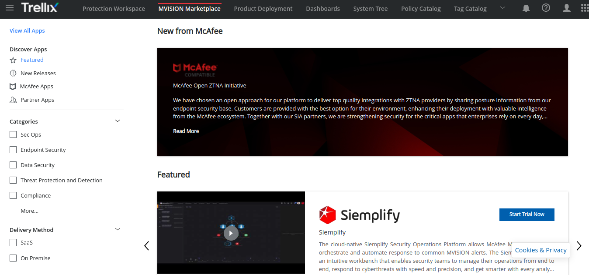
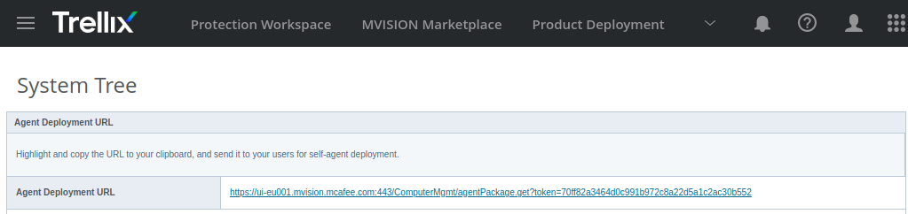

2.1 McAfee Mvision Cloud
1. Introducción
McAfee Mvision Cloud permite acceder a la versión trial del programa durante 2 meses gratis.
Se puede solicitar una demo de 2 meses desde el siguiente enlace:
- https://cloudsecurity.mcafee.com/cloud/en-us/forms/2-step-request-a-demo-mfe.html?source=MFE_Website&lsource=MFE_Website
- https://login.mcafee.com/v1/SignUp/en-US/MVISION/MVISIONEPO
2. Funcionamiento
Manual de Uso
Cuándo se accede al programa lo primero que aparece es un dashboard en el que se puede ver lo siguiente:
- Número de incidentes.
- Dispositivos escalados (número de dispositivos que han recibido una amenaza).
- Amenazas resueltas.
- Amenazas sin resolver.
- Detecciones solamente informativas.
- Eventos de encriptación (eventos de encriptación importantes o críticos).
- Contenido de seguridad (porcentaje de sistemas que se encuentran dentro de un número concreto de días mediante el uso de un DAT actual).
- Estado del software (estado del contenido de seguridad y los productos individuales desplegados en el entorno).
- Administración de dispositivos.(número de dispositivos que no han informado de las detecciones o que no tienen un producto antimalware instalado).
Figura 1. Panel principal.
Para añadir aplicaciones al agente se puede usar el Mvsion Marketplace. Dichas aplicaciones están disponibles en el entorno en unos pocos minutos.

Figura 2. Marketplace.
Si se quiere configurar el despliegue de productos hay que ir al apartado “Product Deployment”. En dicho apartado se puede configurar el grupo sobre el que se crea dicha configuración, la plataforma, que se quiere instalar de cada programa y si se quiere actualizar automáticamente.
Figura 3. Product Deployment.
Si se quieren ver las estadísticas a través de gráficos de barras, sectores, etcétera, se pueden ver en el apartado “Dashboards”. Solamente se tiene que seleccionar el dashboard que se quiere mostrar.
Figura 4. Dashboards.
Si se desea añadir un nuevo equipo o grupo se puede hacer desde la opción “System tree”. Para crear un equipo hay que ir al apartado “New Systems” y para crear un nuevo subgrupo hay que ir al apartado “New subgroups”.
Creación de un usuario: Se añade la url del equipo y se selecciona si es Windows o Linux.
Figura 5. Creación de un usuario.
Una vez creado el usuario, aparecerá una dirección URL la cual si se pulsa sobre ella, descargará el agente McAfee Agent.

Figura 6. URL para la descarga.
Al pulsar sobre el enlace, se descarga un script que se tendrá que ejecutar para añadir el equipo.
Figura 7. Descarga del script.
Una vez se descarga el paquete, se ejecuta el mismo.
Figura 8. Ejecución del script.
Si la ejecución ha sido correcta, aparece el siguiente mensaje:
McAfee Agent Installation finished. Further security products will be installed based on policies managed by your organization.
Para desinstalar el agente:
Una vez ya instalado el programa en el equipo, dicho equipo aparecerá en el árbol del sistema.

Figura 9. Equipo añadido.
Si se hace click sobre el sistema recién añadido, se puede ver con detalle la información del sistema, su dirección IP, nombre de dominio, políticas aplicadas, productos instalados, malware detectado de dicho equipo, etcétera.
Figura 10. Detalle la información del sistema.
Creación del subgrupo
Para crear un subgrupo lo único que hay que hacer es hacer click sobre “New Subgroups” en el apartado de “System Tree”. Después lo único que se necesita es asignarle un nombre descriptivo al grupo de la organización. Se puede crear más de un grupo a la vez, para ello, hay que poner los nombres uno detrás de otro separados por coma, ejemplo: DepSeguridad,DepInformatica, etcétera.
Figura 11. Creación de nuevo grupo.
También se dispone de un catálogo de políticas. Dicho catálogo de políticas tiene varias políticas predefinidas, aunque también se pueden crear políticas nuevas a través del botón “New Policy”.
Figura 12. Catálogo de políticas.
Obra publicada con Licencia Creative Commons Reconocimiento No comercial Compartir igual 4.0